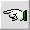
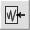

The term selection means choosing a portion of a recorded sound for editing. The normal way we select is to use the mouse dragging capability. To do this, first press the mouse at the starting position in a sound display window. Then holding the pressed down position, drag your mouse to the ending position. Then release. You should see the portion of a sound that you selected highlighted in the wave display window. Various buttons, like playback and edit, apply to the portion of the sound display that you select. You can extend or select a selecction by depressing the mouse and dragging again. To clear a selection, simply click the mouse.
A second way to select is to use the commands described below.
| Select to the Front  | To use this button, first click in the wave display panel at the end of the portion of the recorded sound that you want to select. Then simply press the select to the front button. The command will select and highlight the front portion of the sound wave. |
| Select All  | Clicking this button selects and highlights the entire wave. This command can be useful if you want to splice an entire sound recording into a larger recording in another sound panel. |
| Select to the Back |
To use this button, first click in the wave display panel at the beginning of the portion of the recorded sound that you want to select. Then simply press the select to the back button. The command will select and highlight the back portion of the sound wave. |